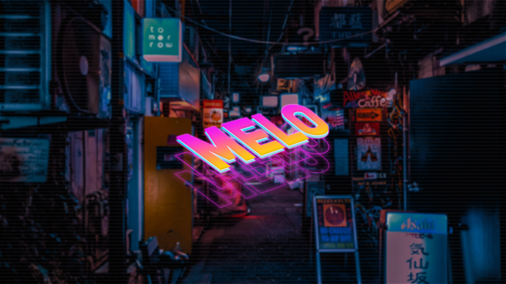

I am Melo John P. Lorenzo from BSIT-MI181. You can call me Melo. I am 19 years old and currently 2nd year college. I graduated senior high school in Asia Pacific College and currently studying there. I live in Paranaque City, Sucat in specific, so I travel a lot just to come to school. Talking about personal life, I like to watch movies and tv series, play video games, play basketball, eat, sleep, travel, and buying items. When traveling, I feel like I am at peace because there are no stress and complications. It is the time I can unwind from the tough times especially when I am traveling with my friends. They are also the main reason why traveling is so much fun. I would rather travel with my friends than travelling with myself. That is the best way I can do to get the stress out of my body. When travelling happens, I get so excited that I only want to do is to be in that moment.
When I got to college, things were different. The closest to my heart stuck by me until now. We got to have different classmates which were unrecognizable faces. As time goes by, we got comfortable to be with each other, but I choose to stick to the people who are closest to me and would stick by me. We got through tough times and difficult times due to numerous projects and activities which was a training for everyone. Now, we are still here in the same class with the same schedule and I am happy about it. How did I survive my senior high? With the help of my parents and friends, I got be comfortable to be with everyone. I treated everything as a training for myself to be ready in the future when the time comes. There were a lot of struggles and mistakes those past years, but I can see it as an improvement. With the help of my classmates and friends, I got to survive my senior high. I spend quite a lot of time playing video games, specifically in the PC and the PS4. I started to play games when I was just still a kid and I did not stop there. Until now, I am still addicted in playing different games on different platforms. That is why I got interested on IT related work.
